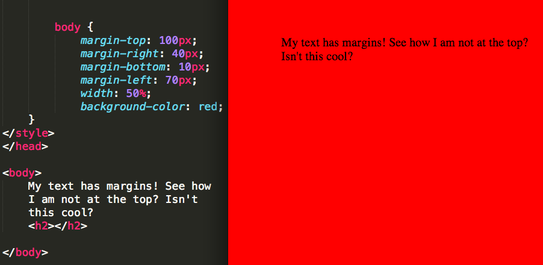
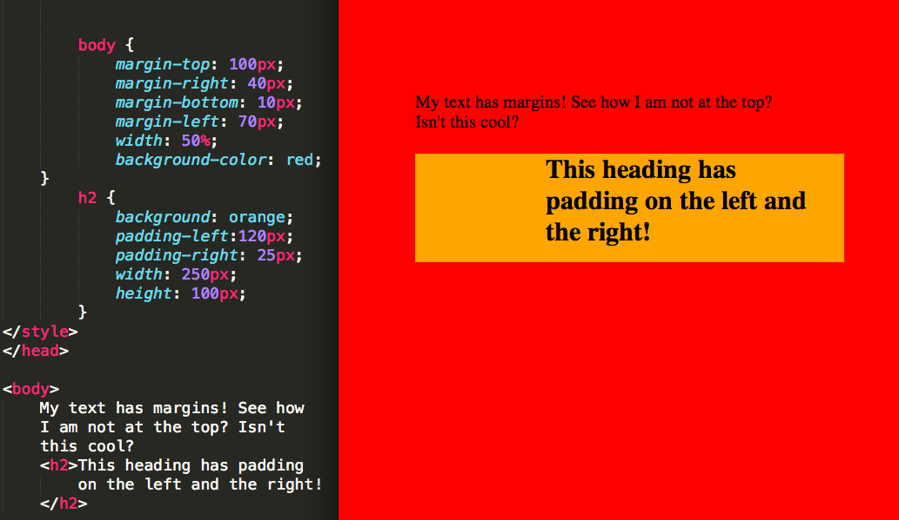

Margins and Padding
Margins-The margin is the room around an element. The larger the margin, the more room between the element and the elements around it. You can alter the margin to move our HTML elements closer to or farther from each other. In the example below, we added different values to the margins to show you how you can customize your body text that doesn't have a placeholder.

Padding- The padding is the room between the content and the border. We can adjust this value with CSS to move the border closer or farther from the content. In the example below the h2 is given a background color so you can see where the padding comes into play with the text.
